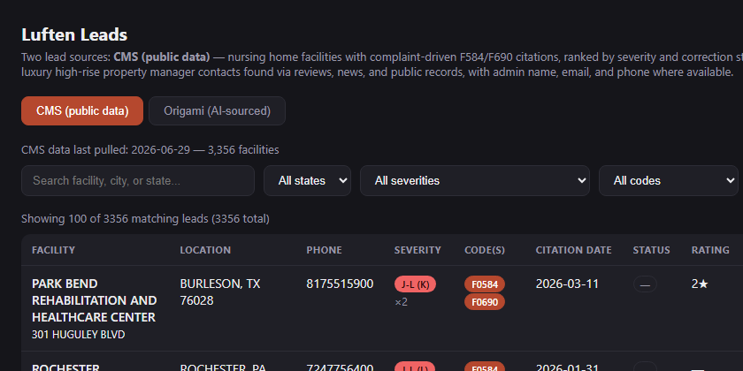

Lead Intelligence System
A dual-source prospecting engine combining structured public data with AI-sourced intelligence — built for a commercial services operation.

Overview
Built to solve a specific problem: identifying and prioritizing high-value commercial leads at scale, faster than a sales team could source them manually. The system pulls from two fundamentally different signal types and merges them into a single ranked, filterable interface.
Facilities appearing in both datasets are surfaced as highest-priority targets — the overlap between structured regulatory data and AI-sourced complaint signals is a stronger buying indicator than either source alone.
Data Sources
- CMS public dataset pipeline — queries federal healthcare facility inspection records to identify nursing homes with F584/F690 citations (environmental hygiene deficiencies), ranked by violation severity, frequency, and correction status across all 50 states.
- Origami AI agent — an AI search agent that surfaces leads from reviews, news, and complaints that structured databases don't capture. Extracts contact names, emails, and phone numbers from public records for both nursing homes and luxury residential properties.
Features
- Interactive dashboard with search, multi-filter (state, severity, citation code, correction status, contact history)
- Deduplication and ranking logic — facilities are scored by recency and severity of violations, not just raw count
- Persistent "contacted" status via Google Sheets sync through Apps Script — team-wide shared state without a backend
- Per-region accumulation — results merge across search runs rather than overwrite, building a growing lead database
- 3,356 facilities indexed across the US at last pull
Stack
← projects
Python
CMS API
Origami AI Agent
HTML / JS
Google Apps Script
GitHub Pages